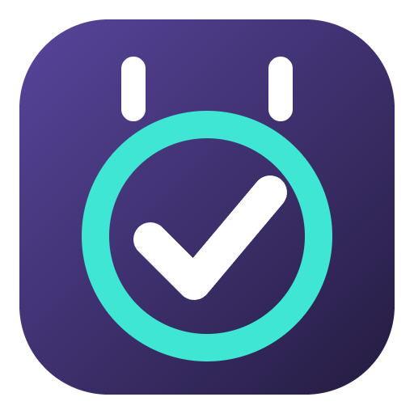

Cally
Cally ist ein kleines, transparentes Kalender- und Aufgaben-Widget für den Windows-Desktop. Es zeigt einen Monatskalender und darunter die anstehenden Aufgaben – sortiert nach Fällig, Bald fällig und Kommend.
Synchronisation mit Google
Cally gleicht Aufgaben in beide Richtungen mit Google Tasks ab. Dadurch erscheinen Erinnerungen aus Google Notizen (Google Keep) im Widget, und Aufgaben, die in Cally angelegt werden, erinnern auf dem Smartphone. Für Aufgaben mit Uhrzeit legt Cally zusätzlich einen Termin in einem eigenen Kalender „Cally Erinnerungen“ an.
Privates Projekt
Cally ist ein privates Hobbyprojekt für den persönlichen Gebrauch. Es wird nicht verkauft, enthält keine Werbung und betreibt keine eigenen Server. Alle Daten bleiben auf dem eigenen PC und im eigenen Google-Konto.